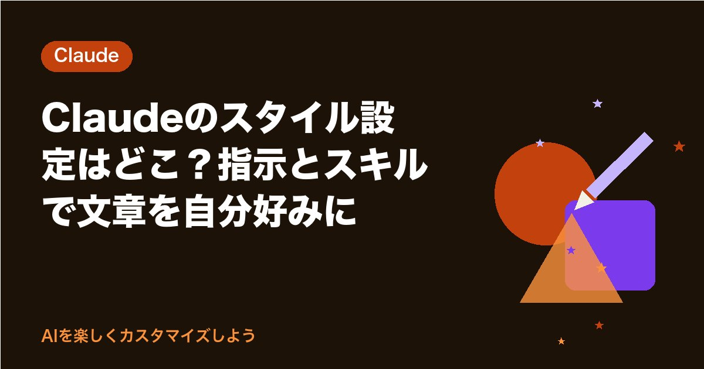

Claudeのスタイル設定はどこ？指示とスキルで文章を自分好みに
※この記事はプロモーション（広告）を含みます

Claudeの答えが「ちょっと固いな」「もう少し短くていいのに」と感じたことはありませんか。
あなたの好みの書き方は、Claudeに一度教えておくと、次の会話からそのまま効かせられます。結論から書く、です・ます調、箇条書きは3つまで。そんな決まりを覚えさせておけば、毎回の手直しが減って、そのぶん早く帰る時間に回せます。
この記事では、2026年10月23日の公式ヘルプで確かめた、Claudeの文章の書き方を自分好みに変える方法を紹介します。
確認日：2026年10月23日（公式のヘルプで確認。画面や名前は変わることがあります）
先にお伝えしたいこと：「スタイル」はいま、どうなっているか
Claudeには以前、答え方の雰囲気を選べる「スタイル」という機能がありました。2026年10月23日に公式のヘルプセンターを確かめたところ、スタイル単独の解説ページは見つかりませんでした（以前の記事のアドレスは「ページがありません」と表示されます）。
代わりに、公式ヘルプの「Claudeのパーソナライゼーション機能を理解する」のページでは、あなた向けに答えを調整する方法として次の3つを案内しています。
| 方法 | 効く範囲 | こんなときに |
|---|---|---|
| Claudeの指示 | すべての会話 | いつでも守ってほしい書き方の決まり |
| プロジェクト指示 | そのプロジェクトの中の会話だけ | 仕事ごとに書き方を変えたいとき |
| スキル | 必要なときに読み込まれる | 「この形の文書を書くときはこうする」という手順や口調 |
同じページでは、「Claudeが応答をフォーマットして配信する方法をカスタマイズしたい場合は、スキルを使用」と案内されています。つまり、いまの公式の案内では、スタイルで担っていた役目はスキルが引きつぐ形です。
あなたの画面にスタイルのメニューがまだ表示されているなら、それを使っても大丈夫です。画面はアカウントや時期によってちがうことがあるので、この記事では、公式ヘルプで確かめられた3つの方法を順に紹介します。
方法1：Claudeの指示（すべての会話に効く）
いちばん手軽なのがこの方法です。公式ヘルプの手順は次のとおりです。
- 画面左下のイニシャルを選ぶ
- 「設定」を選ぶ
- 「Claudeの指示」の欄に、あなたの好みを書く
ここに書いた指示は、Claudeとのすべての会話に使われます。公式ヘルプでは、書く内容の例として「好みのやり方」「よく使う用語」「よくある場面」「話し方の好み」が挙げられています。
書き方の例（そのまま貼りつけて使えます）
- わたしは製造業で生産管理をしている会社員です
- 答えは結論を1行目に書いてください
- です・ます調で、箇条書きは3つまでにしてください
- 専門用語を使うときは、カッコで一言の説明を添えてください
- わからないことは、わからないと書いてください
5行ほどで十分です。全部の会話に効くので、仕事にも遊びにも共通する「あなたらしさ」だけを書いておくのがコツです。
方法2：プロジェクト指示（仕事ごとに書き方を変える）
メールはていねいに、会議のメモは短く、というように、場面ごとに書き方を変えたいときはプロジェクト指示が向いています。
- 「プロジェクト」から、使いたいプロジェクトを開く（なければ「+ 新規プロジェクト」で作る）
- 「プロジェクト指示を設定」を選ぶ
- 書き方の決まりを書いて「指示を保存」を選ぶ
公式ヘルプによると、プロジェクトは無料のアカウントでも使え、無料プランでは5つまで作れます。同じページの別の一文には、プロジェクト指示を「有料プランのみ」とする書き方もあるので、あなたの画面で「プロジェクト指示を設定」が選べるかを確かめてみてください。
| プロジェクト | 書き方の指示の例 |
|---|---|
| 取引先メール | ていねいなビジネス敬語で。件名・あいさつ・要件・お願い・締めの順に |
| 会議メモ | 体言止めの箇条書きで。全体で200字以内に |
| 社内のお知らせ | 現場の人がスマホで読みやすいよう、1文を40字以内に |
プロジェクトの作り方は、Claudeのプロジェクトの使い方｜指示と資料をまとめて自分仕様にでくわしく紹介しています。
方法3：スキル（口調や文書の形を「道具」にする）
スキルは、公式ヘルプで「指示、スクリプト、リソースをまとめたフォルダ」と説明されています。Claudeは、いまの作業に関係のあるスキルだけを読み込んで使います。書き方の面では、「Claudeの応答のトーンと形式を調整する」「あなた自身の執筆や好みに基づいて話し方のパターンを適用する」といった使い方が案内されています。
使える人と、最初の準備
- スキルは、無料・Pro・Max・Team・Enterpriseの各プランで使える
- 「コード実行」の機能がオンになっている必要がある。無料・Pro・Maxでは「設定」→「機能」で「コード実行とファイル作成」をオンにする
- スキルの一覧は「カスタマイズ」→「スキル」で見られ、1つずつオン・オフできる
Claudeの指示とのちがい
公式ヘルプでは、カスタム指示はすべての会話に広く効き、スキルは作業ごとに、関係があるときだけ読み込まれると説明しています。いつも守ってほしいことは「Claudeの指示」へ、「日報を書くときだけ」のような決まりはスキルへ、と分けると整理しやすくなります。
自分の書き方のスキルを作る手順
公式ヘルプ「カスタムスキルの作成方法」で確かめた流れです。
- スキル用のフォルダを作り、その中に skill.md というファイルを置く
- skill.md の先頭に、名前（name）と説明（description）を書く。名前は64文字まで、説明は200文字まで
- その下に、書き方の決まりや、よい例・悪い例を書く
- フォルダごとZIPファイルにまとめる（フォルダ名はスキルの名前とそろえる）
- 「カスタマイズ」→「スキル」で「+」→「+ スキルを作成」→「スキルをアップロード」を選び、ZIPファイルを入れる
- スキルをオンにして、いくつかの頼み方で試す
説明（description）は、Claudeが「このスキルを使う場面かどうか」を判断する手がかりになります。公式ヘルプでも、いつ使うのかを具体的に書くことがすすめられています。
skill.md に書く中身の例（日報の書き方スキル）
| 項目 | 書く内容の例 |
|---|---|
| name | 日報の書き方 |
| description | 製造現場の日報を書くときに使う。今日やったこと・困ったこと・明日やることの3つに分けて、です・ます調で短くまとめる |
| 本文：形 | 見出しは3つ。各見出しの箇条書きは3つまで |
| 本文：言葉づかい | です・ます調。1文は40字以内 |
| 本文：数字 | 数字はメモに書かれた値をそのまま使い、計算や推測で足さない |
| 本文：例 | よい日報の例を1つ、短く書いておく |
フォルダやZIPの作り方に慣れていなくても大丈夫です。公式ヘルプには、チャットでClaudeと一緒にスキルを直していく使い方も載っています。会話の横に開いたスキルのファイルで、直したいところを選んで「Claudeで編集」を押し、お願いを書くと、その場で書きかえてもらえます。
なお、自分の操作を録画してスキルを作る「スキルを記録する」は、公式ヘルプではPro・Max・Teamのプランで、Mac版のCoworkで使える機能とされています。無料プランやチャットでは使えません。
遊びのための「書き方」も作れます
書き方のカスタマイズは、仕事だけのものではありません。
| 使い方 | 指示やスキルの例 |
|---|---|
| 子ども向けの説明 | 小学3年生にもわかる言葉で。むずかしい言葉にはたとえ話を1つ添えて |
| 推し活の感想まとめ | ネタバレになる部分は最後にまとめ、先に「ネタバレあり」と書いて |
| 旅行のしおり | 時間・場所・持ち物の表を最初に。最後に一言、わくわくする言葉を |
| 料理のレシピ | 材料は2人分で。手順は5つまで。洗い物が少なくなる順に |
家族のための書き方スキルを1つ作っておくと、子どもの宿題の手伝いや、週末の予定づくりも楽しくなります。
うまく効かないときの見直し方
- 決まりがぶつかっていないか：「Claudeの指示」で「短く」、プロジェクトで「くわしく」と書いていないか
- スキルがオンになっているか：「カスタマイズ」→「スキル」で確かめる
- 説明（description）が具体的か：いつ使うスキルなのかが書かれていないと、使われにくい
- 例を1つ足す：よい例があると、形がそろいやすい
公式ヘルプでも、スキルは1つの作業にしぼって小さく始め、少しずつ足していく作り方がすすめられています。
確かめた公式の情報
- Claudeのパーソナライゼーション機能を理解する（Claude ヘルプセンター）
- What are skills?（Claude Help Center）
- Use skills in Claude（Claude Help Center）
- How to create custom skills（Claude Help Center）
- プロジェクトを作成・管理するにはどうすればよいですか？（Claude ヘルプセンター）

まとめ
- 2026年10月23日の公式ヘルプでは、スタイル単独の解説ページは見つからず、書き方の調整は「Claudeの指示」「プロジェクト指示」「スキル」の3つで案内されている
- すべての会話に効かせたい書き方は、「設定」の「Claudeの指示」に書く
- 仕事ごとに変えたい書き方は、プロジェクト指示に書く
- 文書の形や口調を道具にしたいときは、スキルを作る。無料プランでも使え、「コード実行とファイル作成」をオンにして使う
- スキルの名前は64文字まで、説明は200文字まで
まずは今日、「Claudeの指示」の欄に「結論を1行目に」と一行だけ書いてみませんか。最後まで読んでくださって、ありがとうございます。あなたがClaudeにいちばん直してほしい書き方は、どんなところですか？
最後まで読んでくださり、ありがとうございました。
まずは1つのAIで、あなたの呼び名か口調を1つだけ設定してみませんか。次の会話から、AIの返事が少し“あなた向け”に変わるのを感じられます。
あなたなら、AIにどんな話し方をしてほしいですか？
この記事は下書きにAIを使い、内容は運営者が公式情報で確認しています。画像はAIで作成したイメージです。